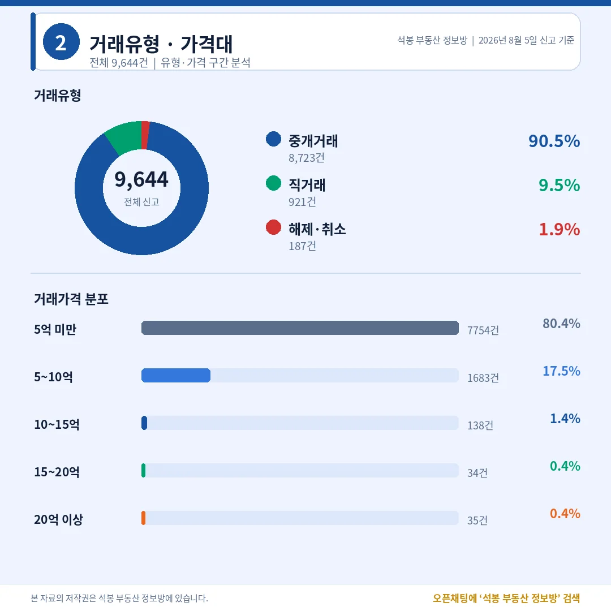
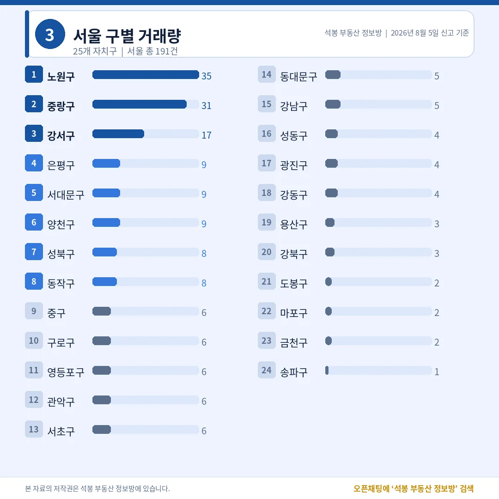
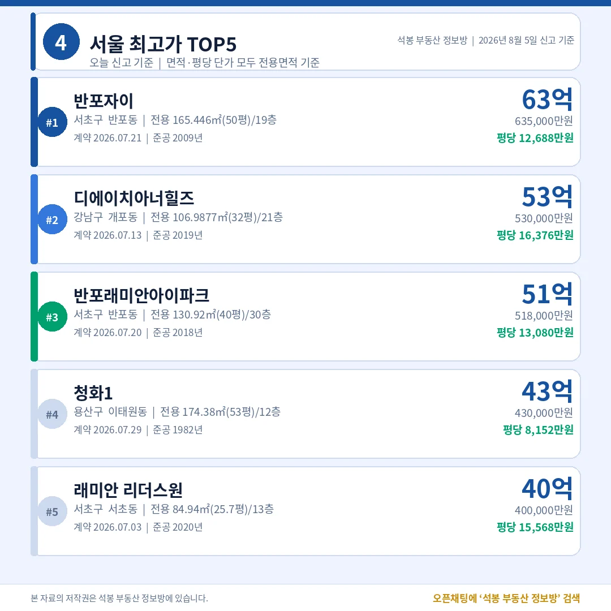
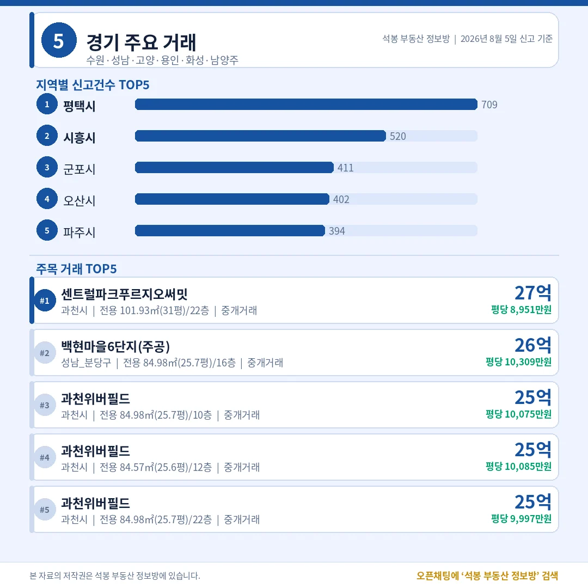
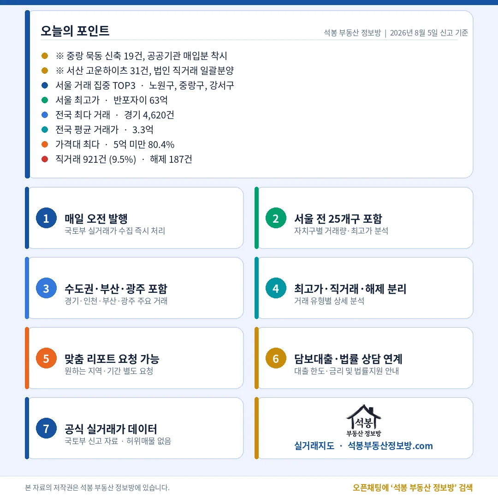

단지명을 누르면 그 단지의 실거래 내역과 시세를 바로 볼 수 있습니다. (면적과 평당 단가는 모두 전용면적 기준)
5억 미만 60.0%, 직거래 8.8%

거래유형·가격대
직거래 비중은 평상시 수준으로 돌아왔습니다.
거래유형
건수
비중
중개거래
903건
91.2%
직거래
87건
8.8%
해제·취소
5건
0.5%
직거래 87건 중 19건이 서울 중랑구 묵동 에이트플레이스 한 단지에서 나왔습니다.
가격대
건수
비중
5억 미만
594건
60.0%
5~10억
258건
26.1%
10~15억
91건
9.2%
15~20억
24건
2.4%
20억 이상
23건
2.3%
전국 평균 5.6억, 중위 4.0억. 평균이 중위보다 1.6억 높은 것은 상단 20억대 스물세 건이 끌어올린 결과입니다.
여기서부터는 회원에게 보여드립니다
카카오 로그인 3초면 전문을 읽을 수 있습니다. 무료입니다.
가입하시면 지역 시장조사 보고서(약식)를 2회 무료로 요청하실 수 있습니다.
이미 회원이면 같은 버튼으로 로그인만 됩니다
경기 204건, 서울 191건

서울 구별 거래량
수도권 467건으로 47.2%, 절반이 지방에서 나왔습니다.
시도
신고
시도
신고
경기
204건
경남
58건
서울
191건
광주
52건
부산
89건
충북
40건
인천
72건
대전
39건
대구
60건
강원
38건
경기 204건은 남양주 27건, 광명 21건, 분당 17건, 하남 15건 순이었습니다.
서울 자치구
신고
비고
노원구
35건
중계 10 · 상계 10 · 월계 9, 쏠림 없음 (중위 7.1억)
중랑구
31건
공공기관 매입 19건 제외 시 12건
강서구
17건
중위 7.6억
은평·서대문·양천
각 9건
서울 전체 중위 8.65억
중랑구 19건은 전부 매도자 법인, 매수자 공공기관인 직거래이고 계약일도 7월 30일 하루로 같습니다. 2026년 준공 신축의 전용 18~40㎡ 소형이 2.4억에서 5.0억 사이에 일괄 손바뀜했습니다.
서울 최고가 반포자이 63.5억

서울 최고가 TOP5
총액 1위가 평당으로는 다섯 중 넷째입니다.
순위 · 단지
위치
거래가
전용면적
평당(전용)
준공
1 반포자이
서초 반포동
63.5억
165.4㎡(50.0평)
12,688만
2009
2 디에이치아너힐즈
강남 개포동
53.0억
107.0㎡(32.4평)
16,376만
2019
3 반포래미안아이파크
서초 반포동
51.8억
130.9㎡(39.6평)
13,080만
2018
4 청화1
용산 이태원동
43.0억
174.4㎡(52.7평)
8,152만
1982
5 래미안 리더스원
서초 서초동
40.0억
84.9㎡(25.7평)
15,568만
2020
4위 청화1의 평당 8,152만원은 지금 살 집의 값보다 이태원 대지에 매겨진 값에 가깝습니다.
지방 최고가는 부산이 아니라 대구

경기/인천/부산/광주
건수는 부산 89건이 많은데, 상단은 대구가 6.5억 높습니다.
지역
신고
최고가 단지
거래가
평당(전용)
경기
204건
분당 백현동 백현마을6단지(주공)
26.5억
10,309만
대구
60건
수성 범어동 두산위브더제니스
18.0억
4,341만
인천
72건
연수 송도동 힐스테이트레이크송도4차
11.8억
3,547만
부산
89건
서구 암남동 힐스테이트이진베이시티
11.5억
3,262만
광주
52건
광산 수완동 현진에버빌1단지
9.1억
2,573만
대구 상단은 두산위브더제니스 전용 137.1㎡(41.5평) 18.0억입니다. 대구 60건 중 수성구가 10건이었습니다. 경기 1위 백현마을6단지(주공)는 전용 85.0㎡(25.7평)에 26.5억으로, 평당 1만을 넘긴 유일한 수도권 밖 거래였습니다.
20억 위 23건, 서울이 18건

고가 구간은 아직 서울이 쥐고 있습니다. 20억을 넘긴 23건 가운데 18건이 서울(서초 5·강남 4·용산 2·영등포 2 등)이었고 나머지 5건은 성남에서 나왔습니다. 15억 위로 범위를 넓혀도 47건 중 서울이 35건입니다. 다만 대구 범어동 18.0억처럼 지방에서도 지역별 상단은 뚜렷하게 만들어지고 있어, 전국을 한 덩어리로 보기는 어려운 하루였습니다.
오늘 통계에서 가장 조심해야 할 숫자는 중랑구 31건입니다. 자치구 순위만 보면 강서구를 두 배 가까이 앞선 것처럼 보이지만, 공공기관이 신축 소형 19가구를 하루에 사들인 기록이 그 순위를 만들었습니다. 특정 단지 비중이 절반을 넘는 지역 순위는 수요 신호가 아니라 계약 한 건으로 읽어야 합니다.
표 보는 법 · 직거래는 중개사를 끼지 않고 당사자끼리 한 거래입니다. 면적과 평당 단가는 모두 전용면적 기준이고, 평은 ㎡를 3.3058로 나눈 값입니다. 중위 거래가는 그 지역 거래를 금액순으로 줄 세웠을 때 한가운데 값이라 평균보다 체감에 가깝습니다. 중위·평균은 해제·취소 건을 빼고 계산했습니다. 이날 국토부 신고분에는 저희가 훑는 지역을 넓히면서 새로 편입된 시군구의 지난달 계약분이 함께 들어왔는데, 하루 흐름을 그대로 보시라고 그 소급분은 빼고 기존 집계 지역만 담았습니다.
원자료: 국토교통부 실거래가 공개시스템 (2026년 8월 5일 신고분 기준) · 편집·제작: 석봉 부동산 정보방 · 신고분은 계약일과 신고일이 다를 수 있으며 해제·취소 건이 뒤늦게 반영될 수 있습니다 · 본 자료는 정보 제공 목적이며 투자 권유가 아닙니다.